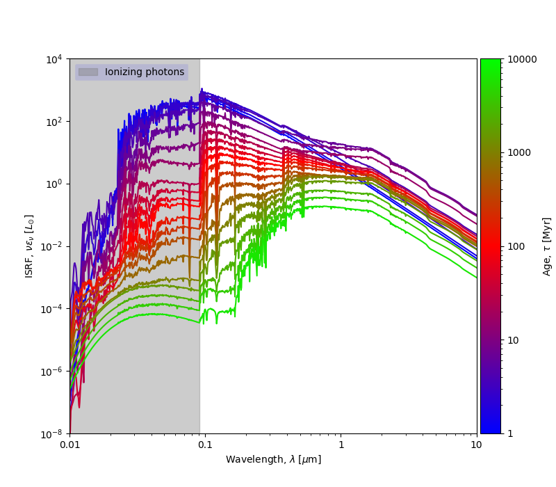
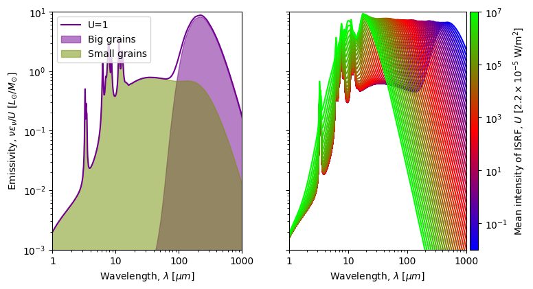
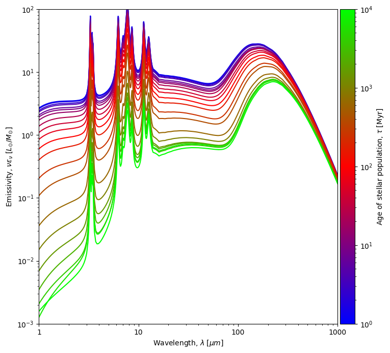
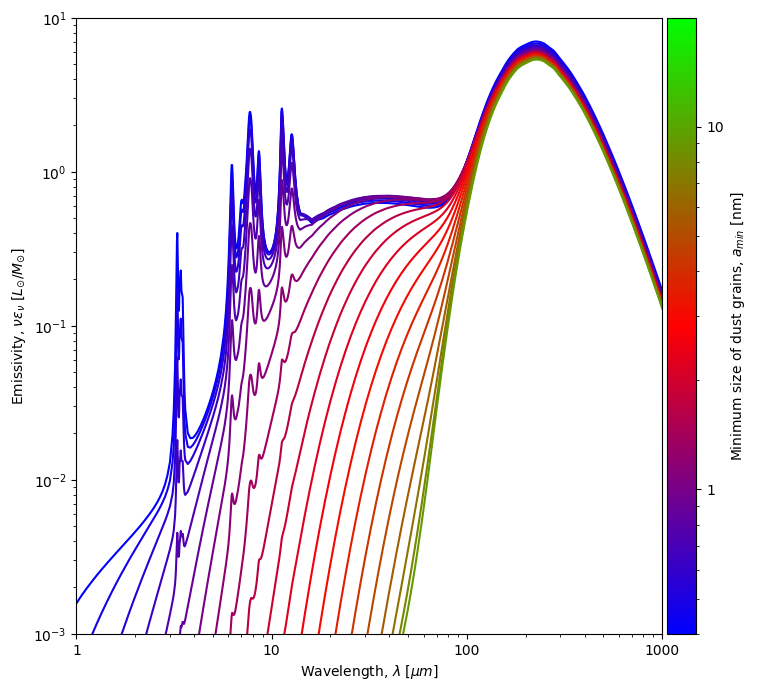

Modeling thermal grain emission is an unavoidable tool to study the
physics of the interstellar medium. Modeling this emission usually
relies on sampling dust emission models. For example, MCMC Bayesian
models rely on interpolating large grids of pre-computed dust emission
models in their quest to fit the dust emission spectral energy
distribution. Most often, increasing the model's complexity; i.e
increasing the number of its modeling parameters, comes at the expense
of larger grids and fits. Scalability obstacles can be tamed by
training a statistical estimator to approximate the model and to sample
the model-space.
The heating and cooling of interstellar dust is controlled by the
absorption and re-emission of electromagnetic radiation from the
interstellar radiation field (ISRF). The interaction of an
electromagnetic wave with a dust grain results in its fractional
absorption as heat, and then, its re-emission in the infra-red.
This dynamics is governed by the interplay of two timescales, the
absorption time, \(\tau_{abs}\), the average time between two photon
absorptions, and the cooling rate, \(\tau_{cool}\), the average cooling
time.

Spectral energy distributions of the interstellar radiation
field (ISRF) as provided by the BPASS model for a stellar
metallicty of Z = 0.004 dex, age range 1 Myr \( \leq\tau\leq\)
10 Gyr, and mean intensity U=1. The energy distribution of
young stellar population with massive stars dominate in the
ultra-violet range compared to infra-red for older
populations
The absorption time, \(\tau_{abs}\), is inversely proportional to grain
size: as the grain gets larger, it intercepts more photons. Whereas the
cooling time, \(\tau_{cool}\), is inversely proportional to the
temperature and is independent of grain size. The hotter the grain is,
the more energetic the absorbed photon is, the faster its dissipation
is. Therefore, out-of-equilibrium grains are smaller grains and spend
most of their time at low temperatures, whereas, large grains tend to
be in thermal equilibrium. The total emission at a specific time is a
sum of the emissions of all the individual grains of different sizes
and different temperatures.

An increase in the intensity, U, of the insterstellar radiation
field brings about a shift of the emission peak of big grains
closer to the mid-infrared range, consequently resulting in higher
equilibrium temperatures, \(T_{eq}\).

Older stellar population predominantly contain low-mass stars.
Emission from massive stars (O-B) peak in the UV. Emission from
low-mass stars peak in the NIR.

Increasing the minimal size of grains lowers the small-grain
component of dust emission.
Implementation
The emission of a dust mixture subjected to the ISRF can be modeled
with the intensity and spectral distribution of the ISRF, as well as,
the composition and size distribution of the dust mixture.
We train a neural-network to emulate the dust emission spectra of a
THEMIS* dust model, by training it on emission as calculated by SwING**
(SoftWares for Investigating Nebulae and Galaxies) written by F.
Galliano adapted to use the stellar evolution model and libraries of
synthetic atmosphere spectra grids BPASS*** for modeling the interstellar
radiation field. The model is trained on a large grid of models by
varying three parameters: the mean power of the interstellar radiation
field, \(U\), the age of the stars in the population \(\tau\), and the
minimal size of dust grains considered for the THEMIS model,
\(a_{min}\). The dataset that was generated constitutes a large models
grid of three parameters, the intensity of the interstellar radiation
field, its population age, and the minimal size of grains. We set
ranges for each parameter spanning over values of interest to
interstellar medium (ISD) studies. Run the Neural-Network directly
in your browser and predict dust emissivity for a given mean intensity,
\(U\), stellar population age, \(\tau\), and minimal dust grain size,
\(a_{min}\).
\(^{*}\) Jones, A. P., Fanciullo, L., K¨ohler, M., et al. 2013, , 558, A62
\(^{***}\) Byrne, C. M., Stanway, E. R., Eldridge, J. J., McSwiney, L., & Townsend, O. T. 2022, , 512,
5329 and Stanway, E. R. & Eldridge, J. J. 2018, , 479, 75